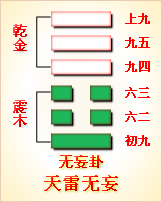

第二十五卦初九爻详解 第二十五卦六二爻详解 第二十五卦六三爻详解
第二十五卦九四爻详解 第二十五卦九五爻详解 第二十五卦上九爻详解
周易第二十五卦 无妄 天雷无妄 乾上震下
无妄：元，亨，利，贞。其匪正有眚，不利有攸往。
彖曰：无妄，刚自外来，而为主於内。动而健，刚中而应，大亨以正，天之命也。其匪正有眚，不利有攸往。无妄之往，何之矣？天命不佑，行矣哉？
象曰：天下雷行，物与无妄；先王以茂对时，育万物。
初九：无妄，往吉。象曰：无妄 之往，得志也。
六二：不耕获，不菑畲，则利有攸往。象曰：不耕获，未富也。
六三：无妄之灾，或系之牛，行人之得，邑人之灾。象曰：行人得牛，邑人灾也。
九四：可贞，无咎。象曰：可贞无咎，固有之也。 九五：无妄之疾，勿药有喜。象曰：无妄之药，不可试也。
上九：无妄，行有眚，无攸利。象曰：无妄之行，穷之灾也。
无妄卦卦象，天雷无妄卦的象征意义
无妄卦，这个卦是异卦相叠，震在下卦，乾在上卦。乾为天为刚为健;震为雷为刚为动。动而健，刚阳盛，人心振奋，必有所得，但唯循纯正，不可妄行。无妄必有获，必可致福。
从卦象来分析，乾代表天，在上卦，震代表雷，在下卦。表示雷在天的领导下活动，震的活动必须遵循乾德，不准离开乾德而轻举乱动，也就是要遵循正确的思想原则办事，这样才能“无妄”。
无妄卦位于复卦之后，《序卦》之中这样说道：“复则不妄矣，故受之以无妄。”能够返回正道，就不会虚妄了。此卦卦名为无妄。“妄”字的结构为“亡”字与“女”字相结合，本义是指女奴逃亡。《说文》中说：“妄，乱也。”《广韵》中说：“妄，虚妄。”可见“妄”的引申义为虚妄、极不真实、悖乱的意思。所以“无妄”便是不虚妄、不妄为的意思。《序卦传》中说：“复则不妄矣，故受之以无妄。”也就是说，阳气的复生使阴气不再妄为了，所以复卦之后便是无妄卦。而阳气的复生同时也是阴气的灾难开始，所以《杂卦传》中说：“大畜时也，无妄灾也。”
天雷无妄卦乾为天，震为雷，天下雷行，万物不敢妄为，为无妄。无妄象杜不妄为，合乎客观规律，不违事实。什么事情均不妄为时，亨通顺利，否则就会发生祸患，不利于发展。
《象》曰：天下雷行，物与无妄;先王以茂对时育万物。
这句话指出了无妄卦的卦象是震下乾上，好比在天的下面有雷在运行之表象，象征着天用雷的威势警戒万物，并赋予万物以不妄动妄求的本性;从前的君主顺应天命，尽其所能地遵循天时以养育万物的生长。
无妄而得，无妄卦显示了无妄而得的道理，属于下下卦。《象》中这样评断此卦：飞鸟失机落笼中，纵然奋飞不能腾，目下只宜守本分，妄想扒高万不能。
无妄卦卦画：无妄卦的卦画为四个阳爻两个阴爻，可以看出阴气此时处于虚弱状态中。
无妄卦卦象：从卦象上进行分析，
无妄卦上卦为乾为天，下卦为震为雷，天上响起惊雷使万物不敢胡作非为，
这便是无妄卦的卦象。从生活常识来讲，雷声很大的雷雨天不宜出门，因为容易遭受雷击。古人很早就发现这一点，于是认为天上打雷是在惩戒坏人，把雷声看作是法律的象征。所以古人会认为在政治局势不稳定而以严法治国的时期，不适合到处走动，以避免不必要的伤害。
关键词：周易,无妄卦,天雷无妄,乾上震下
无妄卦：大亨大通，利于坚持下去。不正当的行为会带来灾祸，不利于向前发展。
初九： 不妄为而前往，吉利。
六二：不耕种就要收获，不开垦荒地就想耕种熟地。妄想者的行为难道有利吗?
六三：意料之外的灾祸。有人将牛拴住，过路的人顺手把牛牵走了，邑人丢牛得了意外之灾。
九四：可以坚持下去，没有灾祸。
九五：并没有妄为却得了疾病，不吃药也会痊愈。
上九：不要妄行。妄行有灾，没有什么好处。